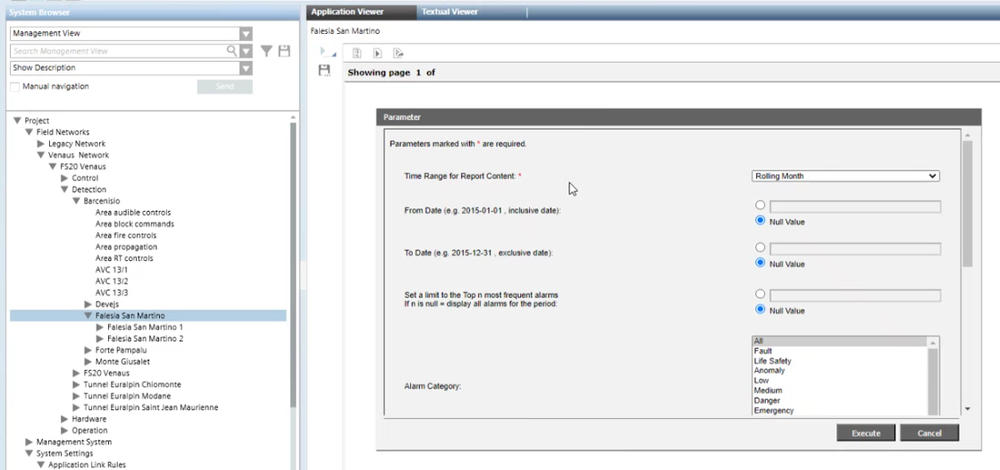
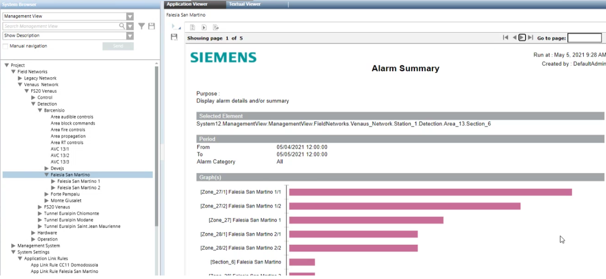

DMS Advanced Reporting
This section operator instructions for executing DMS advanced reports.
Prerequisites
- DMS Advanced Reports are configured in the Desigo CC project.
- System Manager is in Operating mode.
Execute a DMS Report from a Link
Desigo CC can be configured with links that let you directly execute a particular type of DMS Advanced Report on a pre-configured target object, or set of target objects. Such links are available in System Browser under Applications > Links.
- A link for a DMS report is configured under Applications > Links.
- System Manager is in Application View.
- In System Browser, select Applications > Links > [DMS report link].
- In the Extended Operation tab, check that the P2 value is html. Otherwise, you cannot execute the report in the Application Viewer.
- If a different format is set, you can temporarily change P2 to html, to be able to execute the report in the viewer.
- In the Parameter dialog box, adjust the default parameters as required.
- Click Execute.
- The generated report displays in the Application Viewer tab. You can use the arrows on the top right to navigate the pages of the report.
To export the report into different formats, see Export a DMS Report to a File.
Execute a DMS Report from a Target Object
When you select an object for which a report rule with html output is configured, you can execute the associated report from the Application Viewer. The output displays in the same tab, and can be exported into various formats.
- A rule is configured that associates a target object to a report.
- In System Browser, select the target object.
- In the Application Viewer tab, select the desired report from the list.
NOTE: If there is only one report, it is automatically selected. - In the Parameter dialog box, adjust the default parameters as required.
Each field presents a format example or a drop-down list where you can choose one of the possible options.
For example:
- Click Execute.

- The generated report displays in the Application Viewer tab. You can use the arrows on the top right to navigate the pages of the report.
To export the report into different formats, see Export a DMS Report to a File.
Export a Report to a File
After executing a report in the application viewer, you can export the output to various file formats, including PDF, Excel, and DOCX.
- An executed report is displayed in the Application Viewer tab. See Execute a Report from a Link or Execute a Report from a Target Object.
- In the toolbar at the top, click Export report .
- The Export Report dialog box opens.
- From the Export format drop-down list, select the desired file format.
- Set whether to export all the pages of the report or only specified ones.
- Click Execute.
- In the Save As... dialog box, select the location where you want to store the file and click Save.
Adjust General DMS Report Settings
The DMS Report Setttings are general preferences that apply all the DMS Alarm Summary and DMS Access Summary reports that are executed.
- In System Browser, select Application View.
- Select Applications > Advanced Reporting.
- In the Application Viewer tab, click the Configuration Page link.
- Click Advanced.
- In the DMS Report Settings row, click Edit.
- Here you can configure the following settings:
- Date format for events in the reports: Set it to
Auto(based on system settings), or specify it as dd MM yyyy hh mm ss. - Alarm Summary: Search Period Before Selected Time: Set it > 0 (in hours) to enlarge the search to earlier events.
- Display full hierarchy description in Alarm Reports: Select the check box to get the full path instead of the single object description.
- Number of characters used to display full hierarchy description in Alarm Reports: Set a maximum number of characters, or select
Nullto allow any length. - Display Reset Time: Select the check box to get the Reset Time calculated from the alarm generation until the reset command from Event List.
- Include "not closed" events in Alarm Report: Select the check box to get the pending events.
- Format used for object description: In the drop-down box, select the Description/Name/Alias fields as you want them to appear in the reports.
- Display the event ID: Select the check box to get the ID in the reports.
- Number of Top most frequent alarms: Set a limit to reduce the report to the most frequent events, or select
Nullto include all events. - Type of Access Summary report: From the drop-down list, select Standard or Advanced Summary Report.
The Standard report includes:
- Door Tamper
- Reader offline
- Access Granted
- Access denied
- Door Blocked
- Unlock
- Door Held
- Door Forced
On top of the standard events, the Advanced report includes:
- Door unblocked
- Lock Disabled
- Locked
- Door Disabled
- Door Closed - Click OK.